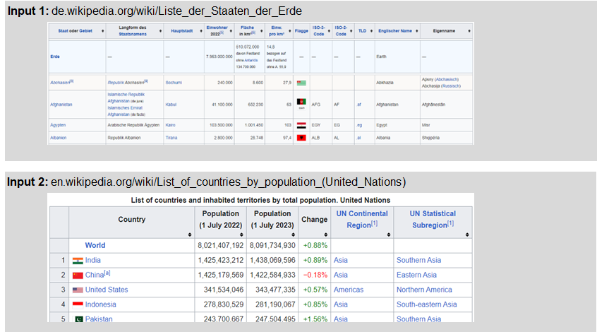

Loading Data from Files
Below you find the B4P functions you can use to load files from the disk, server and the cloud environment:
| table load() | Load files in basic data formats such as CSV, HTML, JSON, XML, and various text formats |
| table load excel file() | Load data from Excel files (.xlsx, .xlsm) |
| variable load() | Load a JSON file into a B4P variable structure seamlessly |
Loading Data from the Web
The Internet contains rich information sources which could be useful for data processing needs.
Only two function calls are needed to retrieve tables from the web or your SharePoint environment:
| file download() | Download a file from the web. File type and contents do not matter. |
| file download overwrite() | Same as above: Overwrites previously loaded file without complaining- |
Once you have downloaded the file, proceed with table load() or another function described above to load the contents into B4P tables or variables.
Need to Create Additional Tables
You can also initialize and create your own tables. They become useful if you need some lookup tables helpful to enrich your analysis.
| table create() | Creates an empty table |
| table initialize() | Creates a new table with initial contents provided with this function all |
View the Tables
You can also initialize and create your own tables. They become useful if you need some lookup tables helpful to enrich your analysis.
| table list() | List the whole table or selected rows and columns on the console output |
| view() | Browse the table interactively in full-screen mode |
Example with two Country Tables from Wikipedia
Two tables with info about the countries in the world, both located in Wikipedia, serve as input files for the analysis. The analysis shall address the following:
- By how many percent do the number of inhabitants deviate and calculate population density?
- Do the same in a consolidated manner for the five continents.
- Do a 2-dimensional histogram counting the countries across population and population density and highlight hot spots.
- Save the work in one Excel file containing two sheets.
Input files:

Simple Example
file download overwrite ( "https://de.wikipedia.org/wiki/Liste_der_Staaten_der_Erde", countries 1.html );
table load ( c1, countries 1.html, HTML, "international gebr" );
file download overwrite ( "https://en.wikipedia.org/wiki/List_of_countries_by_population_(United_Nations)", countries 2.html );
table load ( c2, countries 2.html, HTML, "mid-year estimates" );
table initialize ( country names resolved,
{ { Country Name Pattern, Country Name to use },
{ 'Gambia*', Gambia },
{ 'Congo*Democratic*,DR*Congo', 'Congo (DR)' },
{ 'Congo,Congo*Brazzaville*', 'Congo (Brazzaville)' },
{ 'Lao*', Laos },
{ 'Korea*Democratic*,North Korea', 'Korea (North)' },
{ 'Korea*Republic*,South Korea', 'Korea (South)' },
{ 'Micronesia*', Micronesia },
{ 'Brunei*', Brunei },
{ 'Türkiye', Turkey } } );
echo( "Table C1: ");
table list ( c1, briefly, 4, last col, 1 ); // List just 2 columns and first and last 4 rows
Original table as retrieved from Wikipedia
Table C1:
0 : Staat oder Gebiet | Langform des Staatsnamens
1 : | ...
2 : Erde | —
3 : | ...
4 : Abchasien[8] | Republik Abchasien[9]
... :
206 : Westsahara[8] | Demokratische Arabische Republik Sahara[9]
207 : Zentralafrikanische Republik | ...
208 : Zypern[11] mit Nordzypern[13] | Republik Zypern
209 : Staat | Langform des Staatsnamens
You may notice the following:
- The header names are not short and simple.
- Various fields contain references to further literature, e.g. [1], [a], etc.
- Some exotic spaces are used and result in some misalignments.
For these reasons above, some initial cleanups are needed which are described on the next page.